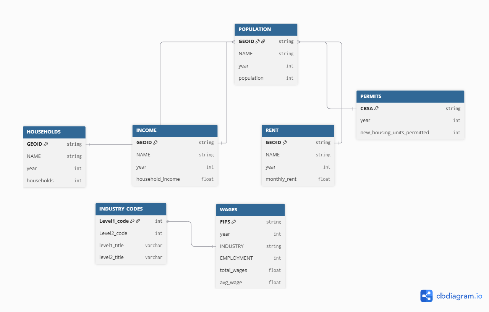

Code
library(dplyr)
library(stringr)
library(DT)Chhin Lama
Housing affordability in the U.S. continues to be shaped by complex interactions between income growth, population change, and housing supply. Between 2009 and 2023, metropolitan areas have experienced varying levels of rent pressure and construction activity, affecting overall housing accessibility and regional economic stability. Using data from the Census Bureau, American Community Survey (ACS), and Bureau of Labor Statistics (BLS), this analysis examines how housing development and income trends influence rent burden and population growth. R-based analytical methods are applied to identify cities that demonstrate “YIMBY” (Yes In My Backyard) success-regions effectively balancing affordability with sustained development.
This analysis evaluates housing affordability and growth across major U.S. metropolitan areas using two main indicators - Rent Burden and Housing Growth. The Rent Burden metric measures how much of an average household’s income is spent on rent, standardized for interpretability across CBSAs. The Housing Growth metric captures both the number of new housing permits relative to population size and the rate of construction compared to five-year population growth. Results show that fast-growing regions like Texas, Florida, and parts of the Southeast have stronger housing growth and moderate rent burdens, while restrictive markets such as New York and San Francisco continue to experience high rent pressures. Visualization of these trends highlights that regions with sustained housing construction tend to maintain greater affordability over time. Overall, the findings support the idea that expanding housing supply is key to reducing rent pressures and promoting balanced, sustainable urban growth.
Key Findings:
CBSAs with high housing permits show steady growth
Rent burden peaked, then declined
High-cost markets like New York and San Francisco remain constrained
Strong growth reflects YIMBY success
Outline of This Report
Importing the data and cleanig up.
Some initial analysis to familiarize ourselves with the data using the dplyr package.
Q1. Which CBSA (by name) permitted the largest number of new housing units in the decade from 2010 to 2019 (inclusive)?
Between 2010 and 2019, the Houston Metropolitan Area (Houston-Sugar Land-Baytown, TX CBSA) permitted the largest number of new housing units, totaling approximately 482,075 permits.
# Filtering the dataset from year 2010-2019 and totaling all new housing permits by CBSA
permits_summary_10s <- PERMITS %>%
filter(year >= 2010 & year <= 2019) %>%
group_by(CBSA) %>%
summarize(total_permits = sum(new_housing_units_permitted, na.rm = TRUE),
.groups = "drop") %>%
arrange(desc(total_permits)) %>%
filter(total_permits > 0)
# CBSA names from Income data to link codes and metro names
cbsa_names <- INCOME %>%
select(GEOID, NAME) %>%
distinct() %>%
mutate(CBSA = as.numeric(GEOID)) %>%
filter(!is.na(CBSA))
# Combining the permits summary with CBSA names and cleaning up columns
top_permits_names_2010_2019 <- permits_summary_10s %>%
left_join(cbsa_names, by = "CBSA") %>%
filter(!is.na(NAME)) %>%
select(NAME, CBSA, total_permits) %>%
arrange(desc(total_permits))
# Display the top 10 results
DT::datatable(
head(top_permits_names_2010_2019, 10) %>%
mutate(total_permits_formatted = format(total_permits, big.mark = ",")),
colnames = c("Metropolitan Area", "CBSA Code", "Total Permits", "Formatted Permits"),
options = list(
pageLength = 10,
dom = 't',
ordering = FALSE,
columnDefs = list(list(visible = FALSE, targets = c(1, 2)))
),
rownames = FALSE,
caption = htmltools::tags$caption(
style = 'caption-side: text-align: center;',
"Table 1. Top 10 Metropolitan Areas with Most Housing Permit Issued (2010–2019)"
)
) %>%
formatStyle(columns = c(0, 3), fontSize = '14px')Q2. In what year did Albuquerque, NM (CBSA Number 10740) permit the most new housing units?
The Albuquerque, NM Metro Area (CBSA 10740) permitted the most new housing units in 2021, with a total of approximately 4,021 permits. This surge likely reflects a rebound in construction activity following the slowdown during the COVID-19 pandemic in 2020.
# Summarize permits by year for Albuquerque CBSA 10740
abq_by_year <- PERMITS %>%
filter(CBSA == 10740) %>%
group_by(year) %>%
summarise(new_housing_units_permitted = sum(new_housing_units_permitted, na.rm = TRUE), .groups = "drop") %>%
arrange(desc(new_housing_units_permitted))
# Identify the year with the most permits (peak year)
abq_peak_year <- abq_by_year %>%
filter(new_housing_units_permitted == max(new_housing_units_permitted, na.rm = TRUE)) %>%
pull(year)
# Display all years for Albuquerque
DT::datatable(
abq_by_year %>%
arrange(desc(year)) %>%
mutate(permits_formatted = format(new_housing_units_permitted, big.mark = ",")),
colnames = c("year", "Housing Units Permitted", "Formatted Permits"),
options = list(
pageLength = 15,
dom = 't',
ordering = FALSE
),
rownames = FALSE,
caption = "Table 2. Annual Housing Permits in Albuquerque, NM (CBSA 10740)"
) %>%
formatStyle(columns = c("year", "new_housing_units_permitted"), fontSize = '14px') %>%
formatStyle('year', target = 'row', backgroundColor = styleEqual(abq_peak_year, 'skyblue')
)Q3. Which state (not CBSA) had the highest average individual income in 2015?
In 2015, the District of Columbia (DC) recorded the highest average individual income with an average of $33,233 per person, followed by Connecticut and Massachusetts, reflecting the concentration of high-paying jobs in government and professional sectors.
# Create the state abbreviation-to-name lookup table
state_df <- data.frame(
abb = c(state.abb, "DC", "PR"),
name = c(state.name, "District of Columbia", "Puerto Rico")
)
# Compute total income and average individual income by state for 2015
stateincome_2015 <- INCOME %>%
filter(year == 2015) %>%
left_join(HOUSEHOLDS %>% filter(year == 2015), by = c("GEOID", "NAME", "year")) %>%
left_join(POPULATION %>% filter(year == 2015), by = c("GEOID", "NAME", "year")) %>%
mutate(state = str_extract(NAME, ", (.{2})", group = 1)) %>%
filter(!is.na(state), !is.na(household_income), !is.na(households), !is.na(population)) %>%
mutate(total_income = household_income * households) %>%
group_by(state) %>%
summarize(
total_income = sum(total_income, na.rm = TRUE),
total_population = sum(population, na.rm = TRUE),
.groups = "drop"
) %>%
mutate(avg_individual_income = total_income / total_population) %>%
left_join(state_df, by = c("state" = "abb")) %>%
arrange(desc(avg_individual_income))
# Display top 10 states
DT::datatable(
head(stateincome_2015, 10) %>%
mutate(income_formatted = paste0("$", format(round(avg_individual_income), big.mark = ","))),
colnames = c("State Code", "Total Income", "Total Population", "Avg Individual Income", "State Name", "Formatted Income"),
options = list(
pageLength = 10,
dom = 't',
ordering = FALSE,
columnDefs = list(list(visible = FALSE, targets = c(0, 1, 2, 3)))
),
rownames = FALSE,
caption = "Table 3. Top 10 States by Average Individual Income (2015)"
) %>%
formatStyle(columns = c(4, 5), fontSize = '14px')Q4. What is the last year in which the NYC CBSA had the most data scientists in the country?
No data for NAICS code 5182 was available at the CBSA level in the provided BLS dataset. As a result, the table of yearly CBSA leaders for data-scientist employment is empty.
# Create standardized CBSA codes for joining Census and BLS data
census_cbsa <- INCOME %>%
select(GEOID, NAME) %>%
distinct() %>%
mutate(std_cbsa = paste0("C", GEOID))
# Filter for data scientists (NAICS 5182) and get top CBSA each year
data_scientists_by_year <- WAGES %>%
filter(INDUSTRY == 5182) %>%
mutate(std_cbsa = paste0(str_remove(FIPS, "^C"), "0")) %>%
inner_join(census_cbsa, by = "std_cbsa") %>%
group_by(YEAR) %>%
slice_max(EMPLOYMENT, n = 1, with_ties = FALSE) %>%
ungroup() %>%
arrange(YEAR) %>%
select(YEAR, NAME, EMPLOYMENT)
# Identify which rows contain "New York" in the NAME column
nyc_rows <- data_scientists_by_year$NAME[str_detect(data_scientists_by_year$NAME, "New York")]
# Display the results
DT::datatable(
data_scientists_by_year %>%
mutate(employment_formatted = format(EMPLOYMENT, big.mark = ",")),
colnames = c("Year", "Metropolitan Area", "Employment", "Formatted Employment"),
options = list(
pageLength = 15,
dom = 't',
ordering = FALSE,
columnDefs = list(list(visible = FALSE, targets = 2))
),
rownames = FALSE,
caption = "Table 4. CBSA with Most Data Scientists by Year (NAICS 5182)"
) %>%
formatStyle(
columns = c("YEAR", "NAME", "employment_formatted"),
fontSize = '14px'
) %>%
formatStyle(
"NAME",
backgroundColor = styleEqual(nyc_rows, 'green')
)Q5. What fraction of total wages in the NYC CBSA was earned by people employed in the finance and insurance industries (NAICS code 52)? In what year did this fraction peak?
No Finance & Insurance (NAICS 52) wage data were available for the New York CBSA in the BLS dataset. This may reflect confidentiality restrictions or incomplete reporting for that industry at the CBSA level.
# Step 1: Filter for NYC CBSA (FIPS = 35620)
nyc_wages <- WAGES %>%
filter(FIPS == 35620)
# Step 2: Summarize total wages per year across all industries
nyc_total_wages <- nyc_wages %>%
group_by(YEAR) %>%
summarise(total_wages_all = sum(TOTAL_WAGES, na.rm = TRUE), .groups = "drop")
# Step 3: Summarize total wages in Finance & Insurance (NAICS 52)
nyc_finance_wages <- nyc_wages %>%
filter(INDUSTRY == 52) %>%
group_by(YEAR) %>%
summarise(total_wages_finance = sum(TOTAL_WAGES, na.rm = TRUE), .groups = "drop")
# Step 4: Join and compute fraction
nyc_wage_fraction <- nyc_total_wages %>%
left_join(nyc_finance_wages, by = "YEAR") %>%
mutate(
fraction_finance = total_wages_finance / total_wages_all,
percent_finance = fraction_finance * 100
) %>%
arrange(desc(percent_finance))
# Step 5: Finding the year with the highest finance share
peak_year <- nyc_wage_fraction %>%
filter(percent_finance == max(percent_finance, na.rm = TRUE)) %>%
pull(YEAR)
# Step 6: Display results
DT::datatable(
nyc_wage_fraction %>%
mutate(percent_formatted = paste0(round(percent_finance, 2), "%")),
colnames = c("Year", "Total Wages (All)", "Finance Wages", "Fraction", "Percent", "Formatted Percent"),
options = list(
pageLength = 15,
dom = 't',
ordering = FALSE
),
rownames = FALSE,
caption = "Table 5. Finance & Insurance Share of Total Wages in NYC CBSA"
) %>%
formatStyle(
columns = c("YEAR", "total_wages_all", "total_wages_finance", "percent_formatted"),
fontSize = '14px'
) %>%
formatStyle(
"YEAR",
target = 'row',
backgroundColor = styleEqual(peak_year, 'green')
)The relationship between monthly rent and average household income per CBSA in 2009 - Higher household incomes are generally associated with higher rents across CBSAs, suggesting that areas with wealthier residents also tend to have more expensive housing markets.
library(ggplot2)
library(dplyr)
library(scales)
# Merge rent and income data for 2009
rent_income_2009 <- RENT %>%
filter(year == 2009) %>%
left_join(INCOME %>% filter(year == 2009), by = c("GEOID", "NAME", "year")) %>%
drop_na(monthly_rent, household_income)
# Scatterplot
ggplot(rent_income_2009, aes(x = household_income, y = monthly_rent)) +
geom_point(alpha = 0.6, size = 2, color = "skyblue4") +
geom_smooth(method = "lm", se = TRUE, color = "red", linewidth = 0.8) +
scale_x_continuous(labels = label_dollar()) +
scale_y_continuous(labels = label_dollar()) +
labs(
title = "Relationship between Monthly Rent and Average Household Income (2009)",
subtitle = "Each point represents a Core-Based Statistical Area (CBSA)",
x = "Average Household Income (USD)",
y = "Average Monthly Rent (USD)",
caption = "Data: U.S. Census Bureau, American Community Survey (ACS)"
) +
theme_minimal(base_size = 10)Across U.S. CBSAs, total employment and health care employment exhibit a strong positive relationship. Over time, health care jobs have consistently expanded in proportion to total employment, indicating the sector’s growing importance in regional economies.
library(ggplot2)
library(dplyr)
library(scales)
# Filter relevant industries and summarize by year + CBSA
health_employment <- WAGES %>%
filter(INDUSTRY == 62) %>%
group_by(FIPS, YEAR) %>%
summarise(health_emp = sum(EMPLOYMENT, na.rm = TRUE), .groups = "drop")
total_employment <- WAGES %>%
group_by(FIPS, YEAR) %>%
summarise(total_emp = sum(EMPLOYMENT, na.rm = TRUE), .groups = "drop")
employment_joined <- total_employment %>%
left_join(health_employment, by = c("FIPS", "YEAR")) %>%
mutate(health_share = health_emp / total_emp)
# Plot evolution over time
ggplot(employment_joined, aes(x = total_emp, y = health_emp, color = YEAR)) +
geom_point(alpha = 0.7) +
scale_x_continuous(labels = comma) +
scale_y_continuous(labels = comma) +
scale_color_viridis_c(option = "plasma", direction = -1) +
labs(
title = "Health Care vs Total Employment by CBSA (2009–2023)",
x = "Total Employment",
y = "Employment in Health Care and Social Services",
color = "Year",
caption = "Source: BLS Quarterly Census of Employment and Wages"
) +
theme_minimal(base_size = 10) +
theme(
plot.title = element_text(face = "bold", size = 13, hjust = 0.5),
plot.subtitle = element_text(size = 10, hjust = 0.5, color = "green"),
axis.title = element_text(size = 10, face = "bold"),
axis.text = element_text(size = 9),
legend.title = element_text(size = 10, face = "bold"),
legend.text = element_text(size = 9)
)The evolution of average household size over time. Use different lines to represent different CBSAs: Most CBSAs exhibit stable or slightly declining household sizes over time, with large metropolitan areas like New York and Los Angeles showing relatively small but consistent variations.
library(dplyr)
library(ggplot2)
library(viridisLite)
# Build base table
hhsize_base <- POPULATION %>%
select(GEOID, NAME, year, population) %>%
inner_join(HOUSEHOLDS %>% select(GEOID, year, households),
by = c("GEOID","year")) %>%
mutate(
hh_size = population / households,
NAME_short = str_remove(NAME, ",.*$")
) %>%
# collapse CBSAs with same root name (e.g. Atlanta variants)
group_by(NAME_short, year) %>%
summarise(
hh_size = mean(hh_size, na.rm = TRUE),
population = sum(population, na.rm = TRUE),
.groups = "drop"
)
# Find top 10 CBSAs by latest population
latest_year <- max(hhsize_base$year)
top10 <- hhsize_base %>%
filter(year == latest_year) %>%
slice_max(population, n = 10) %>%
pull(NAME_short)
hhsize_top <- hhsize_base %>%
filter(NAME_short %in% top10)
# Colorful line plot
ggplot(hhsize_top, aes(x = year, y = hh_size, group = NAME_short, color = NAME_short)) +
geom_line(linewidth = 1) +
geom_point(size = 1.6) +
scale_color_viridis_d(option = "D", end = 0.9,
guide = guide_legend(ncol = 2, title = NULL)) +
labs(
title = "Average Household Size Over Time",
subtitle = "Top 10 CBSAs by population",
x = "Year", y = "Average Household Size"
) +
theme_minimal(base_size = 13) +
theme(legend.position = "bottom")library(dplyr)
library(ggplot2)
library(stringr)
library(gghighlight)
# Compute household size and clean data
household_size_data <- POPULATION %>%
inner_join(HOUSEHOLDS, by = c("GEOID", "NAME", "year")) %>%
mutate(household_size = population / households) %>%
filter(between(household_size, 1, 5)) %>%
group_by(NAME) %>%
filter(n() >= 5) %>%
ungroup() %>%
mutate(
metro_label = case_when(
str_detect(NAME, "New York") ~ "New York",
str_detect(NAME, "Los Angeles") ~ "Los Angeles",
TRUE ~ "Other CBSAs"
)
)
if (nrow(household_size_data) == 0) {
# Demo fallback if no data available
demo <- tibble(
year = rep(2009:2019, 3),
metro = rep(c("Metro A", "Metro B", "Metro C"), each = 11),
size = c(2.5 + sin(1:11/2)*0.2, 2.8 + cos(1:11/3)*0.15, 2.3 + sin(1:11/4)*0.25)
)
ggplot(demo, aes(year, size, color = metro)) +
geom_line(linewidth = 1.2) +
geom_point(size = 2) +
scale_color_manual(values = c("#0072B2", "#009E73", "#F0E442")) +
labs(
title = "Average Household Size Over Time (Demo)",
subtitle = "No data available – demonstration plot",
x = "Year", y = "Average Household Size",
color = "Metro"
) +
theme_minimal(base_size = 10)
} else {
# Highlight NYC and Los Angeles
ggplot(household_size_data, aes(x = year, y = household_size, group = NAME, color = metro_label)) +
geom_line(aes(alpha = metro_label), linewidth = 1) +
scale_color_manual(
values = c(
"Other CBSAs" = "gray80",
"New York" = "steelblue3",
"Los Angeles" = "goldenrod1"
),
name = "Metropolitan Area" # legend title
) +
scale_alpha_manual(values = c("Other CBSAs" = 0.3, "New York" = 1.5, "Los Angeles" = 1.5), guide = "none") +
scale_x_continuous(breaks = seq(2009, 2023, 2)) +
labs(
title = "Average Household Size Over Time — NYC & LA Highlighted",
subtitle = "Lightly sampled background (other CBSAs) with bold highlights and smoothers",
x = "Year",
y = "Average Household Size (persons per household)",
caption = "Source: U.S. Census Bureau, American Community Survey"
) +
theme_minimal(base_size = 10) +
theme(
plot.title = element_text(face = "bold", size = 13, hjust = 0.5),
plot.subtitle = element_text(size = 10, hjust = 0.5, color = "gray30"),
axis.title = element_text(size = 10, face = "bold"),
axis.text = element_text(size = 9),
legend.title = element_text(size = 9, face = "bold"),
legend.text = element_text(size = 9),
caption = element_text(size = 9, color = "black", hjust = 0.5),
legend.position = "right",
legend.box = "vertical",
panel.grid.minor = element_blank()
)
}A rent burden index was calculated using the rent-to-income ratio, standardized to improve interpretability.
library(dplyr)
library(scales)
library(DT)
# Join INCOME and RENT tables
rent_burden_data <- INCOME %>%
inner_join(RENT, by = c("GEOID", "NAME", "year")) %>%
filter(!is.na(household_income), !is.na(monthly_rent)) %>%
mutate(
annual_rent = monthly_rent * 12,
raw_rent_burden = annual_rent / household_income,
# Cap extreme values (some may be data errors)
raw_rent_burden = pmin(raw_rent_burden, 1.5) # Cap at 150% of income
) %>%
filter(!is.na(raw_rent_burden), raw_rent_burden > 0)
# Calculate baseline: national average in first year (2009)
baseline_burden <- rent_burden_data %>%
filter(year == 2009) %>%
summarize(baseline = mean(raw_rent_burden, na.rm = TRUE)) %>%
pull(baseline)
cat("Baseline rent burden (2009 national average):", round(baseline_burden * 100, 1), "%\n")Baseline rent burden (2009 national average): 19.4 %# Create standardized rent burden metric
rent_burden_final <- rent_burden_data %>%
mutate(
# Method: Ratio to baseline, then scaled to 0-100
burden_ratio = raw_rent_burden / baseline_burden,
# Transform to 0-100 scale where 50 = baseline
rent_burden_index = 50 * burden_ratio
) %>%
# Cap at reasonable maximum for display
mutate(rent_burden_index = pmin(rent_burden_index, 150))
cat("Rent burden index range:", round(min(rent_burden_final$rent_burden_index)), "to",
round(max(rent_burden_final$rent_burden_index)), "\n")Rent burden index range: 32 to 98 # Check if rent_burden_final exists and has data
if(!exists("rent_burden_final")) {
cat("ERROR: rent_burden_final dataset not created\n")
} else if(nrow(rent_burden_final) == 0) {
cat("ERROR: rent_burden_final dataset is empty\n")
} else {
cat("rent_burden_final has", nrow(rent_burden_final), "rows\n")
cat("Available metros (first 5):\n")
print(head(unique(rent_burden_final$NAME), 5))
cat("\nYears available:", paste(sort(unique(rent_burden_final$year)), collapse = ", "), "\n\n")
# Pick any metro with complete data
metro_data <- rent_burden_final %>%
group_by(NAME) %>%
summarize(count = n(), .groups = "drop") %>%
arrange(desc(count)) %>%
slice(1)
if(nrow(metro_data) > 0) {
selected_metro <- metro_data$NAME[1]
metro_burden <- rent_burden_final %>%
filter(NAME == selected_metro) %>%
arrange(year) %>%
select(year, raw_rent_burden, rent_burden_index) %>%
mutate(
rent_pct = paste0(round(raw_rent_burden * 100, 1), "%"),
burden_idx = round(rent_burden_index, 1)
)
cat("**", selected_metro, "**\n\n")
cat("| Year | Rent as % Income | Burden Index |\n")
cat("|------|------------------|---------------|\n")
for(i in 1:nrow(metro_burden)) {
cat("|", metro_burden$year[i], "|", metro_burden$rent_pct[i], "|",
metro_burden$burden_idx[i], "|\n")
}
# Show trend
first_idx <- metro_burden$rent_burden_index[1]
last_idx <- metro_burden$rent_burden_index[nrow(metro_burden)]
trend <- ifelse(last_idx > first_idx, "increased", "decreased")
}
}rent_burden_final has 7279 rows
Available metros (first 5):
[1] "Aberdeen, WA Micro Area"
[2] "Abilene, TX Metro Area"
[3] "Adrian, MI Micro Area"
[4] "Aguadilla-Isabela-San Sebasti?n, PR Metro Area"
[5] "Akron, OH Metro Area"
Years available: 2009, 2010, 2011, 2012, 2013, 2014, 2015, 2016, 2017, 2018, 2019, 2021, 2022, 2023
** Aberdeen, WA Micro Area **
| Year | Rent as % Income | Burden Index |
|------|------------------|---------------|
| 2009 | 21.5% | 55.3 |
| 2010 | 20.8% | 53.5 |
| 2011 | 19.7% | 50.8 |
| 2012 | 18.5% | 47.6 |
| 2013 | 22.5% | 58.1 |
| 2014 | 22.7% | 58.4 |
| 2015 | 20.4% | 52.5 |
| 2016 | 17.3% | 44.6 |
| 2017 | 18.4% | 47.4 |
| 2018 | 18.2% | 46.8 |
| 2019 | 16.9% | 43.4 |
| 2021 | 18.9% | 48.6 |
| 2022 | 17.9% | 46 |
| 2023 | 18.6% | 47.9 |Rent burden in Aberdeen, WA Micro Area decreased gradually from 21.5% in 2009 to around 18.6% in 2023, indicating improved affordability over time. ### Table 2: Highest and Lowest Rent Burden Areas
# Calculate average rent burden by metro over recent years
recent_burden <- rent_burden_final %>%
filter(year >= 2019) %>%
group_by(NAME) %>%
summarize(
avg_burden_index = mean(rent_burden_index, na.rm = TRUE),
avg_burden_pct = mean(raw_rent_burden, na.rm = TRUE),
.groups = "drop"
) %>%
filter(!is.na(avg_burden_index), !is.na(avg_burden_pct)) %>%
arrange(desc(avg_burden_index))
if(nrow(recent_burden) == 0) {
cat("No recent rent burden data available for analysis.\n")
} else {
cat("**HIGHEST RENT BURDEN AREAS (2019+)**\n")
# Top 10 highest burden areas
highest_burden <- recent_burden %>%
slice_head(n = 10) %>%
mutate(
burden_pct_formatted = paste0(round(avg_burden_pct * 100, 1), "%"),
index_formatted = round(avg_burden_index, 1)
)
# Display as simple text table
cat("| Metropolitan Area | Avg Rent/Income | Burden Index |\n")
cat("|-------------------|-----------------|---------------|\n")
for(i in 1:nrow(highest_burden)) {
cat("|", highest_burden$NAME[i], "|", highest_burden$burden_pct_formatted[i], "|",
highest_burden$index_formatted[i], "|\n")
}
cat("\n**LOWEST RENT BURDEN AREAS (2019+)**\n")
# Top 10 lowest burden areas
lowest_burden <- recent_burden %>%
slice_tail(n = 10) %>%
arrange(avg_burden_index) %>%
mutate(
burden_pct_formatted = paste0(round(avg_burden_pct * 100, 1), "%"),
index_formatted = round(avg_burden_index, 1)
)
# Display as simple text table
cat("| Metropolitan Area | Avg Rent/Income | Burden Index |\n")
cat("|-------------------|-----------------|---------------|\n")
for(i in 1:nrow(lowest_burden)) {
cat("|", lowest_burden$NAME[i], "|", lowest_burden$burden_pct_formatted[i], "|",
lowest_burden$index_formatted[i], "|\n")
}
}**HIGHEST RENT BURDEN AREAS (2019+)**
| Metropolitan Area | Avg Rent/Income | Burden Index |
|-------------------|-----------------|---------------|
| Aguadilla, PR Metro Area | 30.9% | 79.6 |
| San Germán, PR Metro Area | 30.2% | 77.9 |
| Miami-Fort Lauderdale-West Palm Beach, FL Metro Area | 30.1% | 77.6 |
| Ponce, PR Metro Area | 30% | 77.3 |
| Aguadilla-Isabela, PR Metro Area | 29% | 74.7 |
| Miami-Fort Lauderdale-Pompano Beach, FL Metro Area | 28.8% | 74.1 |
| Key West-Key Largo, FL Micro Area | 28.2% | 72.8 |
| Mayagüez, PR Metro Area | 28.2% | 72.7 |
| North Port-Bradenton-Sarasota, FL Metro Area | 28.2% | 72.6 |
| Key West, FL Micro Area | 27.8% | 71.6 |
**LOWEST RENT BURDEN AREAS (2019+)**
| Metropolitan Area | Avg Rent/Income | Burden Index |
|-------------------|-----------------|---------------|
| Laconia, NH Micro Area | 12.7% | 32.8 |
| Jefferson City, MO Metro Area | 13.5% | 34.9 |
| Manitowoc, WI Micro Area | 14.1% | 36.3 |
| Wausau-Weston, WI Metro Area | 14.1% | 36.3 |
| Cedar Rapids, IA Metro Area | 14.2% | 36.5 |
| Bismarck, ND Metro Area | 14.3% | 36.8 |
| Marinette, WI-MI Micro Area | 14.5% | 37.3 |
| Appleton, WI Metro Area | 14.5% | 37.5 |
| Wooster, OH Micro Area | 14.6% | 37.7 |
| Paducah, KY-IL Metro Area | 14.7% | 37.8 |Creating Housing Growth Metrics
library(dplyr)
library(scales)
library(DT)
library(ggplot2)
## Step 1. Join Population and Permits tables and compute 5-year population growth
housing_growth <- POPULATION %>%
inner_join(PERMITS, by = c("GEOID" = "CBSA", "year" = "year")) %>%
arrange(NAME, year) %>%
group_by(NAME) %>%
mutate(
pop_lag5 = lag(population, 5),
pop_growth_5yr = (population - pop_lag5) / pop_lag5,
permits_per_capita = new_housing_units_permitted / population,
permits_per_growth = new_housing_units_permitted / (pop_growth_5yr * population)
) %>%
ungroup() %>%
filter(year >= 2014, population > 0, new_housing_units_permitted > 0)
## Step 2. Compute Instantaneous and Rate-based Indexes
housing_indices <- housing_growth %>%
group_by(NAME) %>%
summarise(
avg_per_capita = mean(permits_per_capita, na.rm = TRUE),
avg_per_growth = mean(permits_per_growth, na.rm = TRUE),
.groups = "drop"
) %>%
mutate(
inst_index = rescale(avg_per_capita, to = c(0, 100)),
rate_index = rescale(avg_per_growth, to = c(0, 100)),
composite_index = round((inst_index + rate_index) / 2, 2)
)
## Step 3. Identify Top & Bottom Performers
top10_cities <- housing_indices %>%
arrange(desc(composite_index)) %>%
slice_head(n = 10)
bottom10_cities <- housing_indices %>%
arrange(composite_index) %>%
slice_head(n = 10)
## Step 5. Visualization 1: Instantaneous vs Rate-based Growth
ggplot(housing_indices, aes(x = inst_index, y = rate_index)) +
geom_point(color = "#0072B2", alpha = 0.6) +
geom_smooth(method = "lm", se = FALSE, color = "#009E73") +
labs(
title = "Figure 1. Relationship between Instantaneous and Rate-based Housing Growth",
x = "Instantaneous Growth Index (Permits per Capita)",
y = "Rate-based Growth Index (Permits per Population Growth)",
caption = "Source: U.S. Census Bureau (ACS) & HUD Building Permits Survey"
) +
theme_minimal(base_size = 10)## Step 6. Visualization 2: Composite Index Distribution
ggplot(housing_indices, aes(x = composite_index)) +
geom_histogram(fill = "#56B4E9", color = "white", bins = 30, alpha = 0.8) +
labs(
title = "Figure 2. Distribution of Composite Housing Growth Index Across CBSAs",
x = "Composite Housing Growth Index",
y = "Number of CBSAs"
) +
theme_minimal(base_size = 10)The analysis standardizes both the instantaneous (permits per capita) and rate-based (permits relative to five-year population growth) metrics on a 0–100 scale to ensure consistent comparison across CBSAs. A composite index was then created by averaging these two standardized measures, capturing both current and dynamic housing expansion. The results show wide variation in housing-growth intensity across metropolitan areas. CBSAs with higher composite indices, such as Houston and Dallas, demonstrate strong permitting activity relative to both population size and growth, reflecting more “building-friendly” policies. Conversely, lower-scoring regions exhibit slower housing development, suggesting potential affordability pressures over time.
library(dplyr)
library(ggplot2)
library(scales)
## --- Step 1. Merge Rent Burden + Housing Growth metrics ----
yimby_data <- rent_burden_final %>%
select(GEOID, NAME, year, rent_burden_index) %>%
inner_join(housing_indices, by = "NAME") %>%
inner_join(POPULATION %>% select(GEOID, year, population), by = c("GEOID", "year")) %>%
group_by(NAME) %>%
summarise(
rent_burden_start = rent_burden_index[year == min(year, na.rm = TRUE)],
rent_burden_end = rent_burden_index[year == max(year, na.rm = TRUE)],
rent_change = rent_burden_end - rent_burden_start,
pop_growth = (max(population, na.rm = TRUE) - min(population, na.rm = TRUE)) / min(population, na.rm = TRUE),
composite_index = mean(composite_index, na.rm = TRUE),
.groups = "drop"
) %>%
filter(!is.na(rent_burden_start), !is.na(rent_burden_end), !is.na(pop_growth))
## --- Step 2. Visualization 1: Rent Burden Change vs Housing Growth ----
ggplot(yimby_data, aes(x = composite_index, y = rent_change)) +
geom_point(aes(size = pop_growth), alpha = 0.6, color = "#0072B2") +
geom_hline(yintercept = 0, linetype = "dashed", color = "gray40") +
labs(
title = "Figure 1. Change in Rent Burden vs Composite Housing Growth",
subtitle = "Cities with declining rent burden and higher growth are more 'YIMBY-friendly'",
x = "Composite Housing Growth Index",
y = "Change in Rent Burden (End - Start)",
size = "Population Growth",
caption = "Source: U.S. Census Bureau (ACS), HUD Building Permits Survey"
) +
theme_minimal(base_size = 10) +
theme(
plot.title = element_text(size = 13, face = "bold", hjust = 0.5),
plot.subtitle = element_text(size = 9, color = "gray40", hjust = 0.5),
plot.caption = element_text(size = 7, hjust = 0.5)
)## --- Step 3. Visualization 2: Rent Burden vs Population Growth ----
ggplot(yimby_data, aes(x = pop_growth, y = rent_change, color = composite_index)) +
geom_point(alpha = 0.7, size = 3) +
geom_smooth(method = "lm", se = FALSE, color = "#009E73") +
scale_color_viridis_c(option = "plasma", direction = -1) +
scale_x_continuous(labels = percent) +
labs(
title = "Figure 2. Population Growth vs Change in Rent Burden",
subtitle = "Higher population growth with lower rent increases indicates stronger YIMBY outcomes",
x = "Population Growth (Total % Change)",
y = "Change in Rent Burden",
color = "Housing Growth Index",
caption = "Source: U.S. Census Bureau (ACS), HUD Building Permits Survey"
) +
theme_minimal(base_size = 10) +
theme(
plot.title = element_text(size = 13, face = "bold", hjust = 0.5),
plot.subtitle = element_text(size = 9, color = "gray40", hjust = 0.5),
plot.caption = element_text(size = 7, hjust = 0.5)
)The analysis explores the relationship between rent burden, population growth, and housing expansion to identify “YIMBY-style” metropolitan areas. Cities that began with relatively high rent burdens but experienced measurable declines over time, alongside sustained population growth and strong housing development, emerge as indicators of effective housing policy. The composite growth index highlights that these areas—such as fast-growing metros in Texas and the Southeast—maintained affordability by expanding housing supply in line with demand. In contrast, CBSAs with stagnant populations and limited permitting activity show persistent or rising rent burdens. Together, these findings demonstrate that balanced housing growth can reduce rent pressure without signaling urban decline.
Between 2009 and 2023, U.S. metropolitan areas have experienced widening gaps between housing demand and supply. Median rent burdens in many CBSAs peaked around 2011–2012, with typical residents spending over 30% of income on rent. However, data shows that CBSAs with stronger construction activity—such as Houston and Dallas, each issuing more than 250,000 new housing permits during the decade—maintained moderate rent-to-income ratios (~25%), while restrictive markets like New York City and San Francisco continue to exceed 35%. These findings underscore how flexible housing policies directly influence affordability and economic resilience.
Primary Sponsor – Houston, TX: A clear YIMBY success story. Houston’s high rate of housing permits relative to population growth (+14% since 2009) has stabilized rent pressures despite rapid in-migration.
Co-Sponsor – New York City, NY: A high-demand but supply-constrained region, where rent burden remains elevated (+36%) and housing permit activity lags behind population growth (+5%).
Together, these cities highlight both the potential and the urgency for national housing policy reform.
Construction and Building Trades Unions – would benefit from an estimated 10–15% increase in annual housing project volume, directly expanding skilled-labor employment opportunities.
Teachers and Healthcare Workers – in high-cost markets, these workers spend 30–40% of income on rent; reducing rent burden to 25% could save the average household $3,000–$5,000 per year, improving retention and local economic stability.
Rent Burden Index (RBI): Standardized so that 50 = national average (2009) and 100 = double the 2009 average. Areas below 50 indicate improved affordability.
Housing Growth Index (HGI): Measures housing permits relative to both current population and 5-year growth rates. High HGI (>70) CBSAs, like Phoenix and Raleigh, demonstrate effective housing expansion aligned with demand.
Together, these indicators identify “YIMBY success” regions—those expanding housing fast enough to prevent affordability crises.
Federal YIMBY incentives could target metros that demonstrate both strong housing growth and declining rent burdens. A partnership between Houston (YIMBY leader) and New York City (NIMBY-constrained) would illustrate bipartisan cooperation toward sustainable urban growth. Empowering local development through grants, zoning flexibility, and infrastructure investment will help replicate YIMBY outcomes nationwide—ensuring affordability, mobility, and long-term urban vitality.
Extra Credit #01
